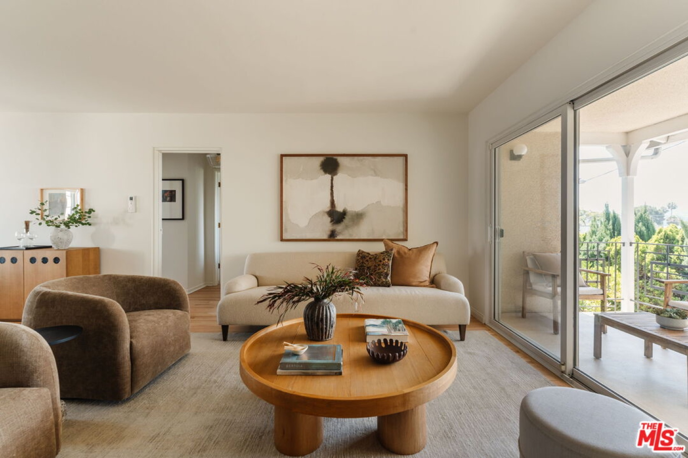
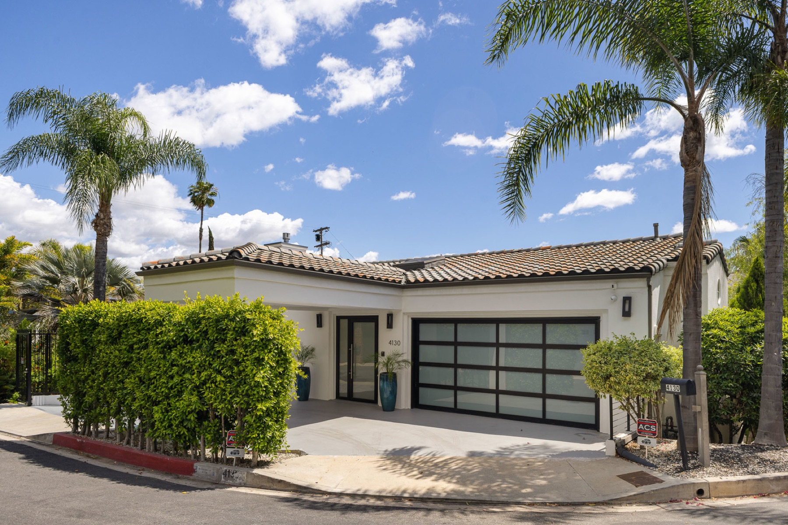

Neighborhood Spotlight: Salon Hestia
This month I'm kicking off a new spotlight series with Jen, co-owner of Salon Hestia, a Sherman Oaks gem named after the goddess of home and hearth. We talked about belonging, what it looks like when neighbors actually show up for each other, and how two businesses sharing a wall ended up sharing something much bigger.
A regular from Crèma walks in mid-conversation.
Julia: Hi, I'm Julia. Nice to meet you. After a quick chit chat he leaves.
Julia: Okay, I love his style. He has this whole thing going on.
Thanks for reading!
Did you know?
- Los Angeles property owners have successfully defeated the proposed street lighting assessment increase by margin of more than four to one. While the city's street lighting system needs attention, property owners sent a clear message that increased fees must come with accountability, transparency, and a realistic plan to address theft, maintenance, and cost controls.
- To have the buying power of $1,000 in 2020, today you'd need around $1,300.00.
- Pet ownership is expanding, with 94 million U.S. households now owning at least one pet, compared to 82 million in 2023. Dog ownership has grown to 51% of U.S. households (68 million dogs), while cat ownership now accounts for 37% of households (49 million cats). #AdoptDon'tShop
- It seems everyone has been turning Spotify into their own personal oldies station. The WSJ reports that roughly 1 in 3 songs streamed on the platform this year from January through April was at least a decade old, and 1 in 6 was at least 20 years old, leading a spokesperson to call 2026 Spotify's “most nostalgic year.”
What’s happening in LA?
- Los Angeles might be considered a burger or taco town, but there is an abundance of hot dogs suped-up with a dose of local flavor all over the city, from new-school Korean corn dogs to chili-covered old-school wieners.
- A Baja-influenced seafood bounty at Venice's San Damián, the new marisquería sibling to Damián in the Arts District, could not have come at a better moment. Enrique Olvera and his team, including chef Chuy Cervantes, have opened what may be LA's hit restaurant of the season.
- Just in time for the remainder of FIFA's 2026 World Cup tournament comes Pawn Shop, a sleek new sports bar and restaurant in Hollywood that opened on June 26, with notable backers including James Beard Award–winning chef Tony Messina, local sports talent, and a big-name billionaire.
Featured listings




- Sherman Oaks — 3627 Cody Rd, 91403. 4 BD · 5 BA · 3,739 SF · $4,997,000. Perched behind gates on nearly an acre just north of Mulholland, an extraordinary 1956 Mid-Century Modern estate by Modern Trend Construction Company and architect Richard Dorman.
- Los Feliz — 2021 Hillhurst Ave, Unit 9, 90027. 2 BD · 1 BA · 946 SF · $699,000. A sophisticated second-floor sanctuary with restored hardwood floors, a private balcony, and DTLA skyline views.
- Los Feliz — 4130 Parva Ave, 90027. 5 BD · 6 BA · 5,492 SF · $4,398,000. A north-of-the-boulevard estate blending sophistication with comfort, soaring vaulted ceilings, and open-concept design.
- Silver Lake — 3924 Sunset Boulevard. 3 BD · 3 BA · 14,139 SF · $25,500,000. An iconic Sunset Junction property with a 3,000-square-foot apartment and eight retail spaces.